盘点52种罕见动物
一份流传很广的罕见动物名单，原文出处已不可考。我们照录名单，保留原文的备注。有些动物罕见是因为稀有，有些是因为长得实在奇怪。
1. 皱鳃鲨：只生活在大西洋和太平洋深海，被称为活化石。2. Promachoteuthis sulcus：2007年发现于南大西洋2000米深海，能看到类似人类牙齿的结构，其实那只是部分皮肤。3. 南极冰鱼：血液中没有血红蛋白，所以呈白色，能通过皮肤直接吸收氧气。4. 透翅蝶：翅膀透明或半透明，主要在南美。5. 手枪虾：能发出海洋生物中最响的声音之一，足以干扰声纳。6. 狮鬃水母：世界上最大的水母，触手可达36米。7. 蓝脚鲣鸟：雄性的脚越蓝越吸引雌性，求偶时会跳舞展示蓝脚趾。8. 雌雄嵌体北美红雀：一半雌性一半雄性，不是PS的。9. 墨西哥钝口螈：俗名“六角恐龙”，是两栖动物。10. 亚马逊牛奶树蛙。11. 玻璃蛙：皮肤半透明，内脏清晰可见。12. 雪人蟹：2005年发现于南太平洋深海热泉。13. 笑脸蜘蛛。14. 警报水母：受攻击时发光迷惑捕食者。15. 鸡冠多角海蛞蝓。16. 橡皮龟：世界上最大的海龟，可达900公斤，其实没有龟壳。17. 粉色宽吻海豚。18. 紫蛙。19. 撒旦叶尾壁虎。
20—39. 一组白化动物：鳄鱼、海龟、孔雀、蛇、鲸鱼、狮子、老虎、哈士奇、刺猬、乌鸦、斑马、长颈鹿、企鹅、松鼠、袋鼠、黑猩猩、梅花鹿、喜鹊、几维鸟、狼獾。白化动物漂亮，但在自然界很危险——它们没有与生俱来的保护色。
40. 吸血鬼鹿。41. 长颈龟。42. 大王具足虫。43. 鹦嘴鱼。44. 海猪：生活在深海海底，以泥土里的食物残渣为食。45. 㺢㹢狓：长颈鹿的近亲，仅存于刚果民主共和国。46. 澳洲魔蜥：颈部的肉瘤低头时可以充当“假头”。47. 人齿鱼：又称帕库食人鱼。48. 熊猫蚂蚁：其实是无翅的雌性黄蜂。49. 欧氏尖吻鲛：栖息深海，对人类无害。50. 红唇蝙蝠鱼：发现于加拉帕戈斯群岛，可在海底漫步。51. 水熊虫：出名的嗜极生物，能在极端条件下生存。
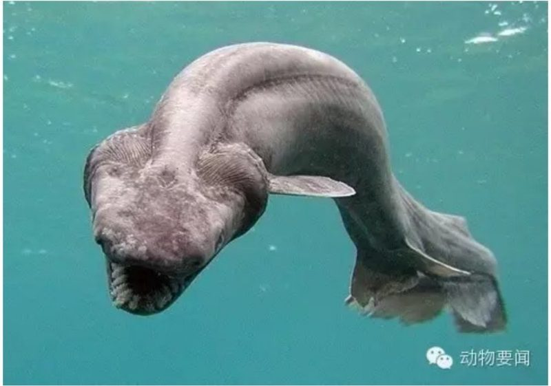
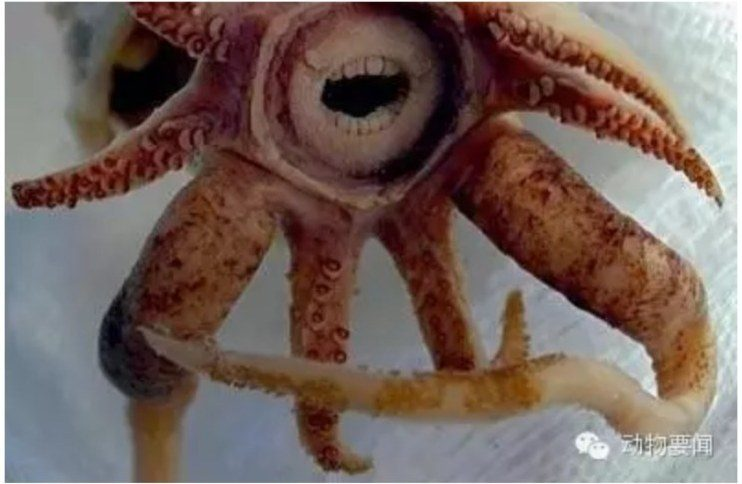
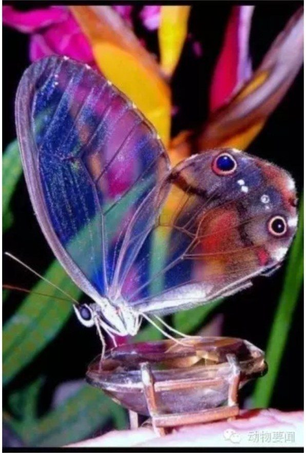
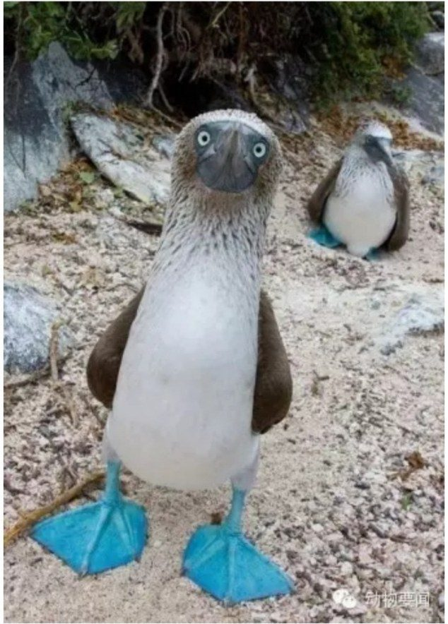
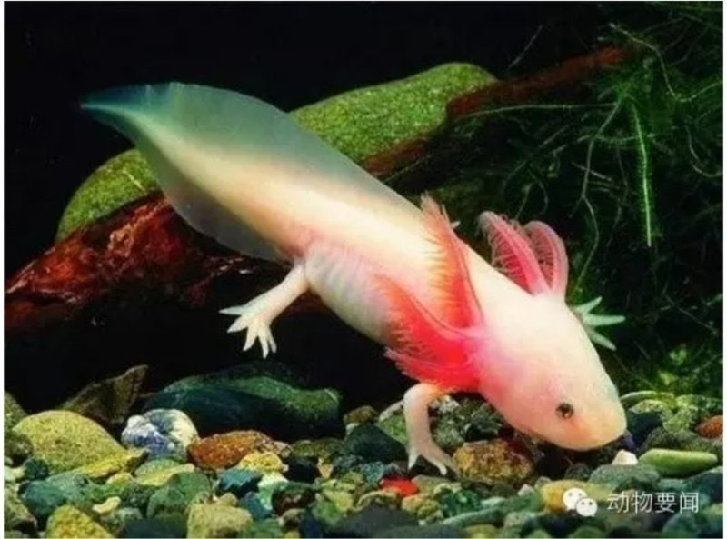
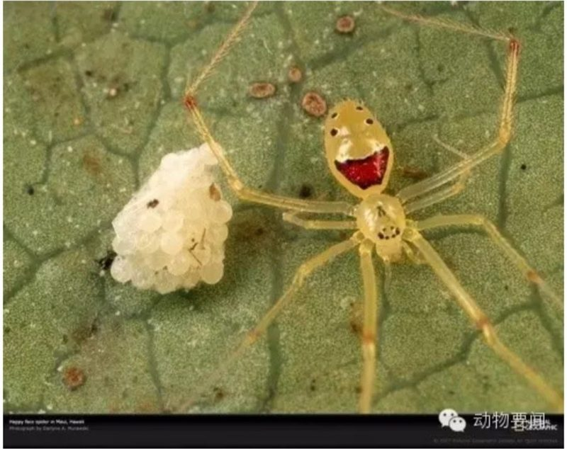
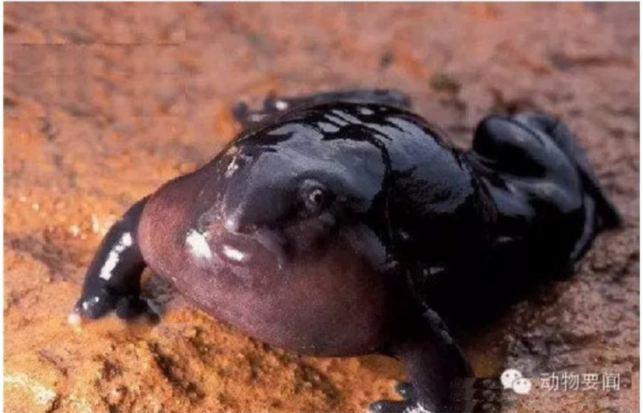
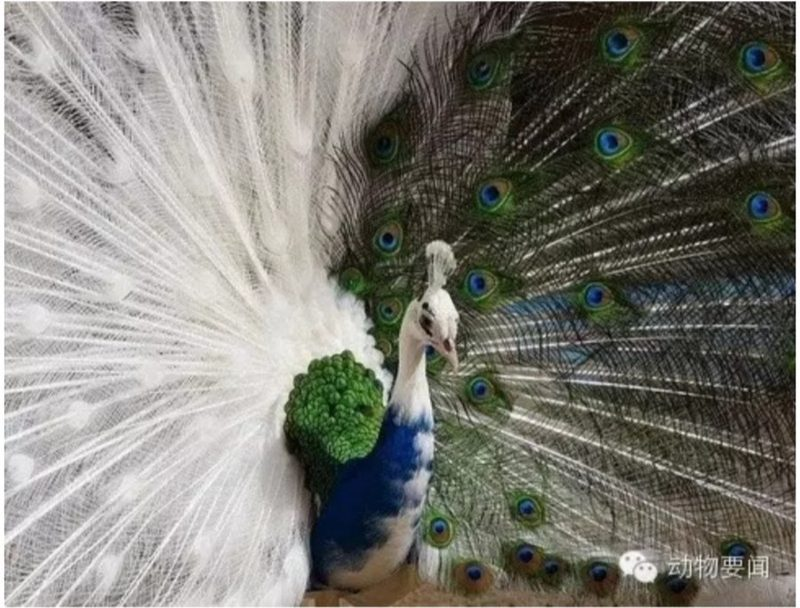
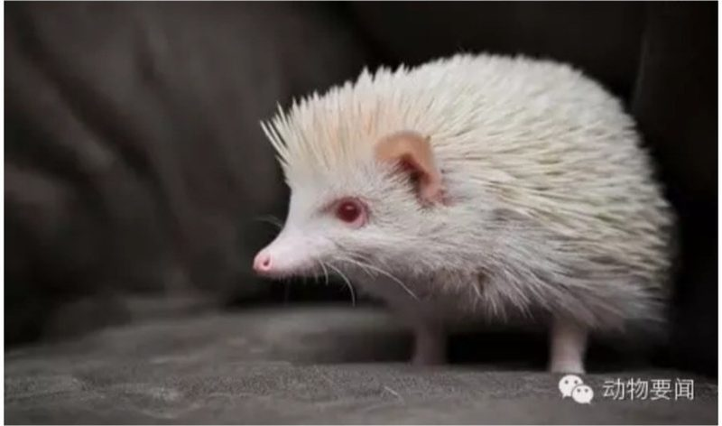
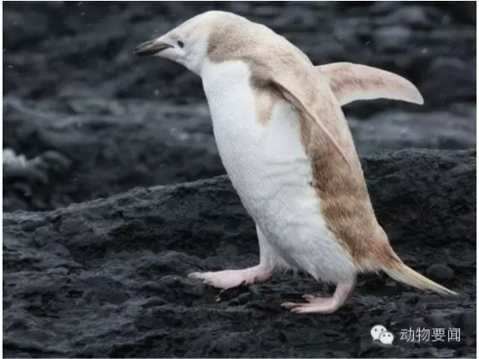
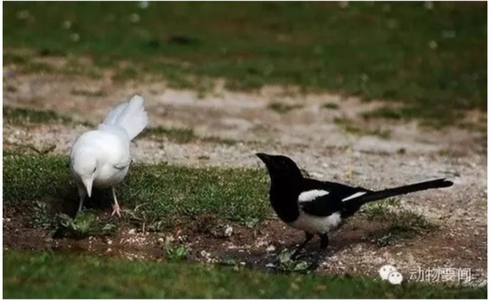
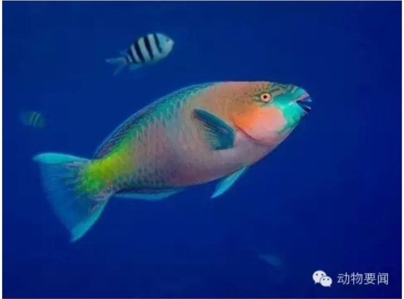